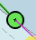

AIS

"AIS Pilotplug to USB" cable

Basic AIS receiver
|
OpenCPN AIS Settings
To achieve the best performance and avoid cluttering the screen the AIS Target settings need adjusting. This will help in reducing the number of irrelevant alarms. |
Connecting the AIS
An AIS receiver may be connected in the same way as the GPS. The typical AIS data rate is 38400, instead of 4800. However the easy way is get yourself a "AIS Pilotplug to USB" cable. This will also give you a GPS position (No need for a seperate GPS)

AIS Target Information
right-click
Rollover text shows the name,MMSI number and nationality of the vessel.

Target Query… (Class A AIS)

The vessel of interest is highlighted by a broken rectangle.

Target Query… (Class B AIS)

Target List…

Interpreting AIS Information
| AIS_Icon | Information | AIS_Icon | Information |
|---|---|---|---|
An active AIS SART and is a distress call equal to a “Mayday”transmission. More about AIS sart. |
|
The V-shape stern indicates a Class B target. Tugboats and pilot boats very often carry Class B transponders. These are often designed specifically for small commercial boats, fishing boats and pleasure crafts. |
|
|
Icon displayed when testing an AIS-SART device. |
|
Targets is complying with the Euro AIS Inland specification. |
Aircraft participating in Search and Rescue. |
|
This vessel has the “Inland Blue Flag” set, it’s a part of the European, Inland AIS standard. The “Blue Flag” signal, commonly seen on inland waters, indicates that the vessel requests a “stbd-stbd” passage or crossing. This Blue Signal is manually switched on/off, by the target. |
|
|
Potential Danger. |
|
Aton, Aid to Navigation, for example a Lighthouse or a Buoy with an AIS transmitter. |
|
No Danger. Not Identified (Voyage data not received) |
|
Aton, Aid to Navigation, that is off it’s suposed position. For example a buoy equiped with AIS that has come adrift. |
|
No Danger. Not Identified (Name from cached data) |
|
Virtual Aton, Virtual Aid to Navigation, not a real marker. Can be useful for a range of situations. A new wreck, is one example. Further explanations. |
No Danger. Identified |
|
Virtual Aton, off position. Actually seen in the wild, but may be a user config error. (Old style display.) |
|
|
Lost Target |
|
AIS Base Station |
|
Ship which has lost fix - position unavailable. Displayed at the last known position. |
The following tagets only displays if DSC messages, GpsGate mesages, Radar or APRS messages are mixed in to the incoming AIS stream, by using, for example a multiplexer. More on the following pages. |
|
|
Vessel not under command. |
|
DSC Station. Only the DSC message received. The position contains only degrees and minutes of Latitude and Longitude. |
|
Vessel restricted in ability to manoeuvre. |
|
DSC Station. DSC and DSE messages received. The DSE message contains the missing decimals of minutes of Latitude and Longitude. The result is a much more accurate position. |
|
Vessel constrained by draft. |
|
DSC Station transmitting a distress signal. Treat this as a “Mayday” call. |
|
Vessel aground. |
GpsGate Buddy target. |
|
|
Vessel engaged in fishing. |
 |
ARPA Target |
|
High Speed- and Wing In Ground- crafts. This includes Hydrofoils, Hovercrafts and low flying crafts utilising the ground effect. |
|
APRS Target |
|
Anchored or moored. Displayed when the transmitted “Navigation status” is “at anchor” or “Moored”. There is no guarantee that this status is correct, as it is set manually on the transmitting ship… |
|
…illustrated by this ship. Note the black line on the yellow circle. This indicates that the vessel is turning to port (left), also illustrated by the lag in the display update. ROT - Rate Of Turn is available in the “Ais Target Query” dialog, through the right click menu. |


AIS Examples

A vessel at the junction appears to be altering course to enter 'our' canal.
right-click

The vessel is identified.

'Zeldenrust' is a potential danger and has triggered a warning based on the settings entered in OpenCPN.
COG predictor arrow length is set at three minutes.
There is a red dashed extension line of the COG predictor which helps provide an estimate of time to CPA, if target query has not been used.
Estimated positions of the vessels at CPA are shown by the blue dots.
The yellow highlighted line indicates the distance off at CPA.

'Zeldenrust' has turned further and will now pass down our port side. CPA 48.5m.

'Zeldenrust' is past and clear.
The vessel at 'Neptune Repair' is a potential danger but she is moored.